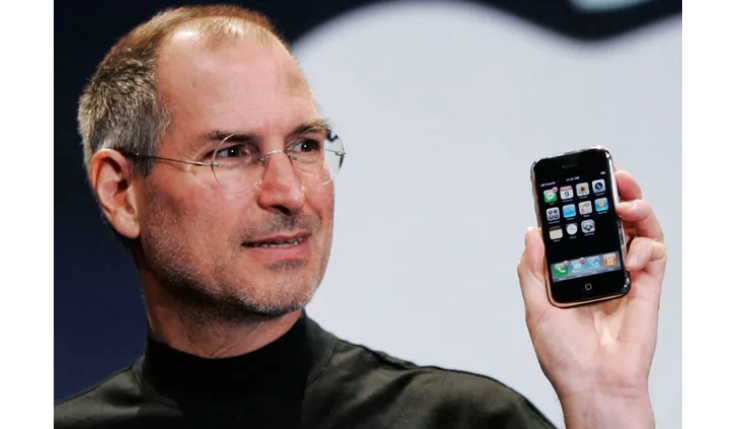
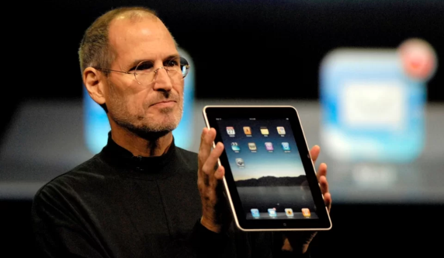

O iPhone é lançado e começa a disponibilizar muitas funções do computador para o smartphone.

2009
A Microsoft lança o Windows 7, sistema que já conta com a capacidade de fixar aplicativos na barra de tarefas e avança em diversos recursos, como no reconhecimento de toque e manuscrito.
2010
A Apple lança o iPad, transformando completamente a forma como todos enxergavam a mídia e iniciando o segmento de computadores tablet inativos.

2017
A Agência de Projetos de Pesquisa Avançada de Defesa (DARPA) começa a desenvolver um programa de “Informática Molecular”, também conhecido como Bioinformática, que usa moléculas como computadores.
A HISTORIA SEM FIM
Como você pode ver, a ideia dos computadores surgiu há muito tempo, como uma forma de otimizar cálculos e acelerar o cadastro de dados.
Ao conferir a história do computador, percebemos como é incrível o fato de que hoje, carregamos em nossas mãos computadores tão pequenos — afinal, os smartphones não deixam de ser mini computadores — que seriam inimagináveis aos pioneiros dessas máquinas.
Sendo assim, sabemos que essa evolução não está nem perto do fim, assim como a necessidade de profissionais da área de TI.